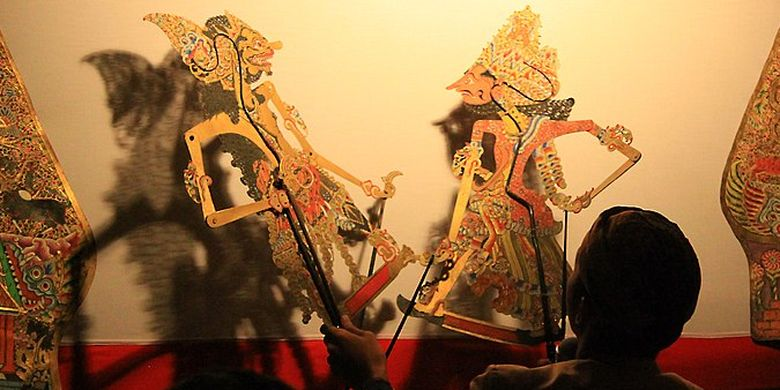
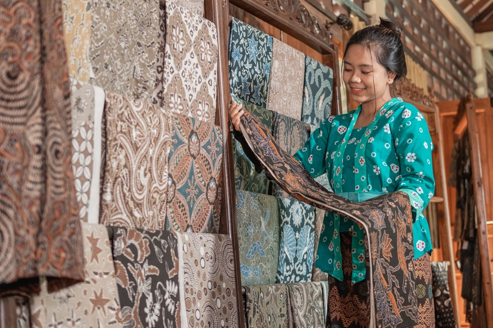
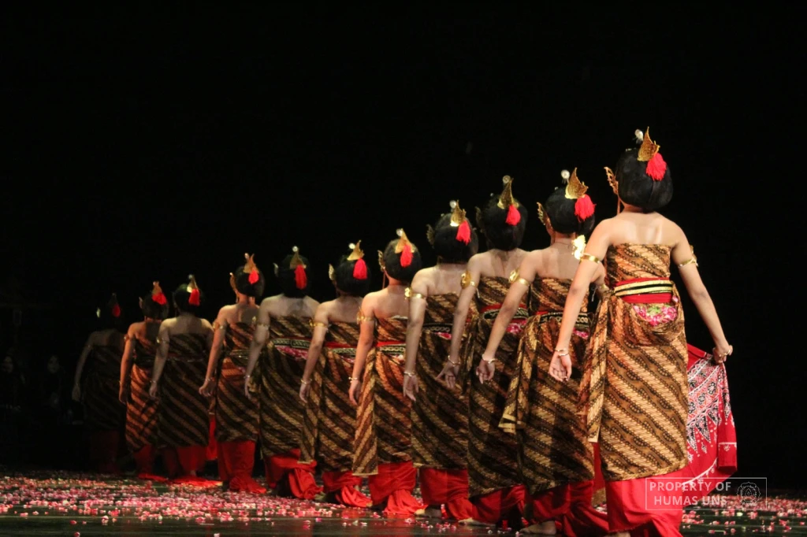
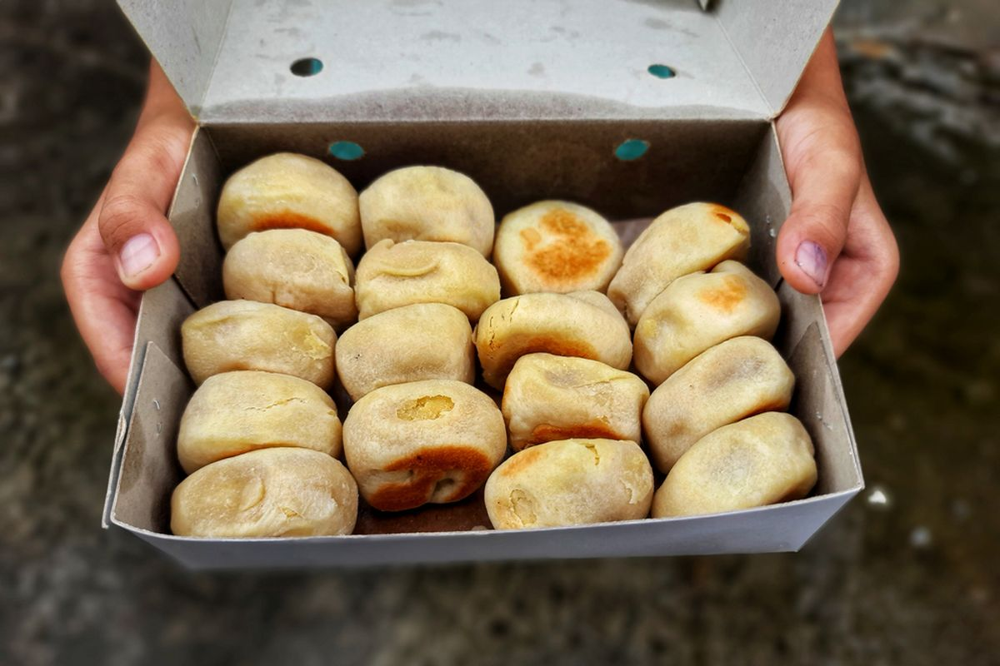
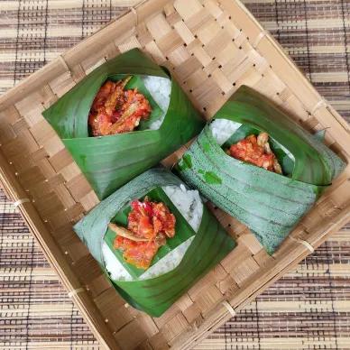
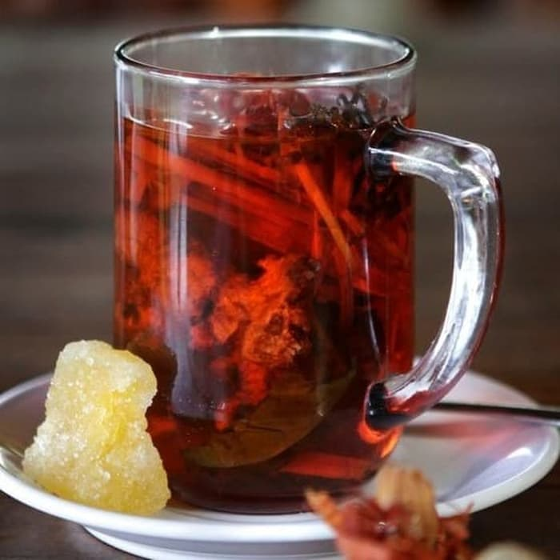

📜 Asal Usul dan Jati Diri Yogyakarta
Asal-usul Yogyakarta bermula dari Perjanjian Giyanti (1755) yang memecah Kerajaan Mataram, di mana Pangeran Mangkubumi mendirikan Kasultanan Ngayogyakarta Hadiningrat, menjadikannya ibu kota di wilayah baru, dan tanggal pindah ke keraton baru (7 Oktober 1756) menjadi Hari Jadi Kota. Namanya sendiri berasal dari bahasa Sanskerta, "Ayodhya" (kota damai) dan "Karta" (makmur), artinya "kota yang layak makmur" atau "kota yang aman dan makmur"
🎨 Filosofi dan Ciri Khas Daerah
Filsafat Yogyakarta
Mendasari Karakter MasyarakatAda beberapa falsafah penting yang menjadi dasar perilaku masyarakat Yogyakarta
- Hamemayu Hayuning Bawana : Menjaga keharmonisan, kedamaian, dan keseimbangan dalam hidup.
- Sawiji, Greget, Sengguh, Ora Mingkuh: Sawiji (fokus dan bersungguh-sungguh), Greget (penuh semangat), Sengguh (percaya diri), Ora Mingkuh (tidak menyerah). Filsafat ini mencerminkan sifat tangguh, rendah hati, dan berkomitmen.
- Memayu Hayuning Sesami: Mengutamakan kebaikan, toleransi, dan harmoni dalam hubungan sesama manusia.
- Sangkan Paraning Dumadi: Kesadaran akan asal-usul dan tujuan hidup, yang menumbuhkan sikap religius dan spiritual.
Sifat Masyarakat
- Hamemayu Hayuning Bawana || Menjaga keindahan dan ketertiban dunia.
- Toleransi Tinggi || Dikenal ramah dan menjunjung tinggi gotong royong (*guyub rukun*).
🎭 Kesenian dan Warisan Tak Benda
Yogyakarta adalah rumah bagi berbagai seni tradisi yang telah diakui dunia. Kesenian ini sarat makna dan selalu diiringi oleh alunan Gamelan yang khas. Berikut adalah tiga warisan seni yang paling populer:

Wayang Kulit
Pertunjukan bayangan yang sarat makna, diiringi Gamelan. Tokoh-tokoh pewayangan mengajarkan filosofi hidup, moralitas, dan kepemimpinan. Warisan ini diakui UNESCO sebagai Masterpiece of Oral and Intangible Heritage of Humanity.

Batik Klasik
Batik Yogyakarta didominasi warna cokelat (soga), putih (mori), dan biru kehitaman. Motif klasik seperti Parang Rusak dan Kawung tidak hanya indah tetapi memiliki filosofi mendalam yang terkait dengan Keraton.

Tari Klasik Keraton
Tari Bedhaya dan Srimpi melambangkan kehalusan, kesucian, dan keseimbangan semesta. Tarian ini dulunya hanya dipentaskan di dalam Keraton dan mengandung pesan spiritual serta tata krama yang tinggi.
🍛 Kuliner Legendaris Yogyakarta
Makanan Yogyakarta identik dengan rasa manis yang khas, mencerminkan keramahan dan kelembutan budayanya. Berikut adalah empat ikon kuliner wajib coba:
 Gudeg
Gudeg
Si primadona kota. Nangka muda yang dimasak santan dan gula merah dalam waktu lama, menghasilkan rasa manis legit dengan tekstur yang lembut. Sering disajikan dengan krecek pedas dan telur areh.
📍 Lokasi Khas: Kawasan Wijilan
Bakpia PathokCamilan wajib ikonik sebagai oleh-oleh. Kue kering bulat pipih ini berisi adonan kacang hijau yang manis dan lembut. Rasanya telah berkembang menjadi varian keju, cokelat, dan ubi ungu.
📍 Lokasi Khas: Desa Pathok
Nasi Kucing & AngkringanFenomena sosial-kuliner yang merakyat, dijual di gerobak Angkringan. Nasi porsi kecil ('seperti jatah kucing') dengan lauk sederhana seperti sambal teri, ditemani sate-satean yang dibakar.
📍 Lokasi Khas: Sepanjang Jalan Mangkubumi
Wedang UwuhMinuman rempah-rempah yang menyehatkan, terbuat dari daun, jahe, kayu secang, dan gula batu. Warnanya merah cantik dan memberikan sensasi hangat di tenggorokan. Cocok diminum saat malam hari.
📍 Lokasi Khas: Kawasan Imogiri🗺 Peta Lokasi Yogyakarta (Keraton)
Lihat lokasi pusat kebudayaan (Keraton) di peta di bawah ini. Anda dapat menjelajahi Sumbu Filosofi secara langsung.